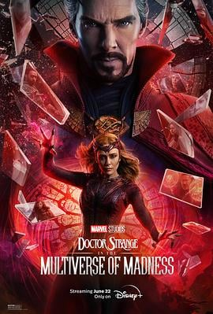

6.3
奇异博士2：疯狂多元宇宙
Doctor Strange in the Multiverse of Madness
2022
美国
评分 6.3
导演:
山姆·雷米
演员:
本尼迪克特·康伯巴奇 / 伊丽莎白·奥尔森 / 切瓦特·埃加福 / 本尼迪克特·黄 / 索契尔·戈麦斯 / 瑞秋·麦克亚当斯 / 迈克尔·斯图巴
类型:
动作,奇幻,科幻
剧情简介
在多元宇宙的边界不断松动的背景下，斯蒂芬·斯特兰奇必须面对一场远比他以往遭遇更混乱、更不可预测的危机。一位拥有穿越多元宇宙能力的少女美洲查韦斯突然闯入他的生活，身后紧追的神秘怪物显然不是单纯的物理威胁。随着蛛丝般相互牵连的维度逐渐崩塌，一个未知的力量正试图夺取少女的能力，以操控无数宇宙的命运。奇异博士与王组成小队，奔走于维度之间，试图揭开追击者背后的真相。然而，他们越深入探索，就越意识到这场混乱与某位强大的旧友有关——旺达。失去孩子后所承受的悲痛让她急速走向黑暗，她所掌握的《黑暗神书》力量将她推向无法回头的深渊。她对多元宇宙的渴望、对家庭的执念化为强大破坏力，让所有世界都岌岌可危。多个宇宙的碰撞引发视觉与概念上的冲击，现实不断扭曲，记忆与身份在穿梭中反复重组。斯特兰奇在混乱的维度碎片里，不断看见那些可能成为自己的版本，也不断被迫思考力量、选择与代价的意义。他必须直面自身的缺陷，找到超越魔法的智慧，才能阻止灾难持续扩散。影片以恐怖元素包裹奇幻冒险，以破碎世界映照角色的内心裂缝，也让奇异博士在一次又一次的冒险中真正理解“责任”的重量。